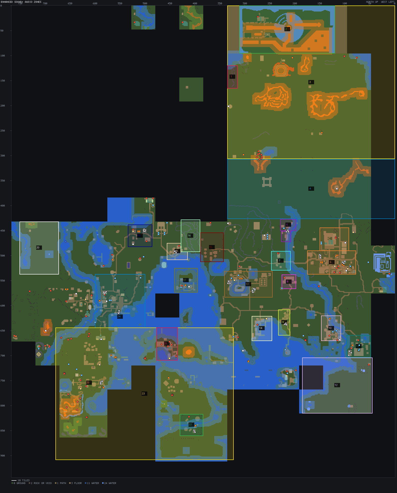

Audio zones

Music regions
| # | Region | Music | Ambient bed | Bounds from |
|---|---|---|---|---|
| 1 | Ice Plateau | deep wilderness track (immediate_2) | snow wind | ice warrior / giant / spider spawns |
| 2 | North-wild addition | deep wilderness track (immediate_2) | ash wind + lava bubbling | the volcano map (generator X0..X1, EDGE) |
| 3 | Wilderness, deep (lvl 21+) | immediate_2 | deep-wild wind and steps | Point.wildernessLevel |
| 4 | Wilderness, low (lvl 1-20) | track 16 | wild wind, insects | Point.wildernessLevel |
| 5 | Varrock | track 4 | town (grassland) + market crowd | Point.inVarrock |
| 6 | Edgeville | track 7 | grassland | Point.inEdgeville |
| 7 | Barbarian Village | track 8 | grassland | Point.inBarbVillage |
| 8 | Draynor Manor | track 3 | haunted (owl, dark reverb) | Veronica outside (208,561), Oddenstein upstairs (213,553); provisional |
| 9 | Draynor | track 3 | grassland | Point.inDraynor |
| 10 | Lumbridge | track 1 | grassland | Point.inLumbridge |
| 11 | Al Kharid | track 9 | desert wind | Point.inAlKharid |
| 12 | Kharidian Desert | track 9 | desert wind | desert wolf spawns |
| 13 | Falador | track 6 | grassland | Point.inFalador |
| 14 | Port Sarim | track 15 | port + gulls | Point.inPortSarim |
| 15 | Taverley | track 14 | grassland | Point.inTaverly |
| 16 | White Wolf Mountain | track 14 | snow wind | white wolf spawns |
| 17 | Entrana | track 15 | grassland + church bell | Point.inEntrana |
| 18 | Catherby | track 11 | coast + gulls | Point.inCatherby |
| 19 | Seers | track 11 | grassland | Point.inSeers |
| 20 | Gnome Stronghold | unnamed 34 | forest | Point.inGnomeStronghold |
| 21 | Brimhaven | track 10 | jungle + port | Point.inBrimhaven |
| 22 | Shilo Village | track 10 | jungle | Point.inShilo |
| 23 | Karamja | track 10 | jungle + monkeys | Point.inKaramja |
| 24 | Ardougne | track 12 | town + market crowd | Point.inArdougne |
| 25 | Yanille | track 13 | grassland | Point.inYanille |
| - | Countryside (everywhere else) | tracks 2 and 5, shuffled | grassland day / night | everything no region claims |
| - | Underground (floor 3) | track 17 | cave wind; magic sparks near altars | floor 3 of the map |
Terrain beds
| Bed | Where | Sound |
|---|---|---|
| Coast | water (overlay 2) within 6 tiles, outside towns too | sea waves; gulls one-shots |
| Swamp | swamp water (overlay 7) within 6 tiles, outside the Wilderness | swamp insects and birds |
| Lava | lava (overlay 11, 26) within 6 tiles | lava bubbling |
| Ash | the ash zones (ash-zones.py) | ash wind |
Emitters
| Source | Sound | Carries | On map |
|---|---|---|---|
| Forge | forge hammering, metal | 8 tiles | 32 |
| Fire / range | crackling fire | 5 tiles | 92 |
| Fountain / well | trickling water | 6 tiles | 37 |
| Waterfall | waterfall roar | 18 tiles | 1 |
| Altar | church bell (rarely), dark reverb | 8 tiles | 14 |
| Tavern | tavern crowd voices | 7 tiles | 10 |
| Bank | quiet crowd murmur | 5 tiles | 48 |
Easing
| What | How it eases |
|---|---|
| Music: region change | Crossfade over 4 s; a 3-tile hysteresis at the border so walking along it never flips back and forth |
| Music: quiet gaps | Each track fades in over 3 s and out over 5 s; then 1-3 min of ambience only |
| Region and rule beds | Weighted mix, each bed's weight easing to 0 over a 5-tile edge band (as the ash does); the total eases over 3 s |
| Emitters | Volume by distance (full within 1/3 of the reach, silent at the reach); a new emitter eases in over 1 s |
| Day / night beds | Crossfade across dusk and dawn (the ~5-minute transitions), in step with the light |
| Weather loops | Follow the weather envelope: in and out over ~3 s, like the particles |
| Thunder | One-shot after each flash: F1 quiet 3-5 s later, F3 loud within 0.5 s |
| Indoors | Ambience and weather 10 dB down and muffled, eased over 0.5 s at the roof line |
| Underground | Overworld beds and music out over 2 s, cave bed and dungeon music in |